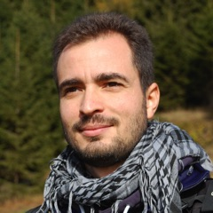
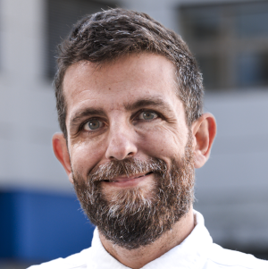
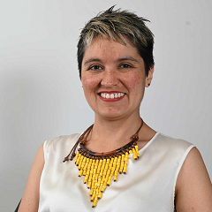
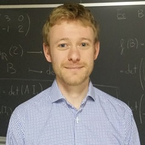
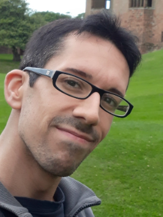
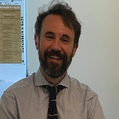

Officers
Antonio Canale - Coordinator
Antonio Canale is associate professor of Statistics at the Department of Statistical Sciences of the University of Padova. His research covers Bayesian parametric and nonparametric methods, factor analysis, functional data analysis. He is the author of a number of papers on methodological and applied statistics, and has served on the scientific committees of national and international conferences. Within SIS he has been committee member and coordinator of the young section (ySIS) and committee member of the data science section (SIS-SDS). He is in the Board of Directors of the International Society for Bayesian Analysis (ISBA) for the years 2024-2026. Homepage.
Raffaele Argiento - Vice Coordinator
Raffaele Argiento is a Full Professor of Statistics in the Department of Economics at the University of Bergamo. His research focuses on developing Bayesian methods for analyzing complex data, with a particular emphasis on mixture models in a nonparametric context. His work has also been applied to problems in biology, sports analytics, and ecology. He has been actively involved in competitively funded research projects, serving as both co-investigator and principal investigator. He is also a regular visiting scholar at the National University of Singapore. Raffaele is dedicated to promoting and disseminating Bayesian statistics through organizing conferences, workshops, and other initiatives as a member of the International Society for Bayesian Analysis (ISBA) and the Italian Statistical Society (SIS). More information about his activities and publications can be found on his website.
Isadora Antoniano Villalobos
Isadora Antoniano-Villalobos is an Associate Professor of Statistics at Ca' Foscari University of Venice (Italy) and a Research Affiliate at the Bocconi Institute for Data Science and Analytics. She holds a BSc in Applied Mathematics (ITAM), an MSc in Mathematical Sciences (UNAM), where she discovered her love for Stochastic Processes and Bayesian Nonparametrics, and a PhD from the University of Kent (UK). Before joining Ca' Foscari in 2018, she was a Postdoctoral Fellow and Assistant Professor at Bocconi University. Her research focuses on Bayesian nonparametrics, the modeling of complex dependence structures, and extreme value analysis, with particular applications in hydrology. She is also interested in objective Bayesian methods and minimal informativeness in different contexts. An active member of ISBA, she has recently been elected Secretary of its Objective Bayes Section.
Federico Camerlenghi
Federico Camerlenghi is an Associate Professor of Statistics in the Department of Economics, Management and Statistics at the University of Milano-Bicocca. He earned the Ph.D. in Mathematics and Statistics from University of Pavia in 2015, and he has been awarded two prizes for his doctoral dissertation: the best Ph.D. Thesis in Statistics (Italian Statistical Society, 2016) and the Savage Award in Theory & Methods (International Society for Bayesian Analysis, 2017). He is a member of the PhD board in Economics, Statistics and Data Science (University of Milano-Bicocca), where he is actively involved in teaching, and he regularly supervises Ph.D. students. His research focuses primarily on nonparametric statistics (classical and Bayesian), with a particular interest in species and feature sampling models, mixture models and clustering. Recently, he received two prizes for his research contributions: the Bicocca Young talents award (2019) and the Early-Career Scholar Award for Contributions to Statistics (2022), assigned yearly by the Italian Statistical Society (SIS). Federico has been actively involved in serving national and international academic societies, and currently serves as an Associate Editor for the *Electronic Journal of Statistics* and *Statistical Methods & Applications*. Homepage.
Federico Castelletti
Federico Castelletti is Associate Professor in Statistics at the Faculty of Economics of Università Cattolica (UCSC) in Milan. He received a PhD in Statistics from Università degli Studi di Milano-Bicocca in 2018 and spent the next years as postdoctoral researcher first and then Assistant Professor at UCSC. His primary area of research is Bayesian graphical modelling, with applications to causal inference, design of experiments and clustering. Relative to these topics, he co-authored several papers published in major peer-reviewed statistical journals, with contributions from methodological, computational and applied perspectives. He is member of the International Society for Bayesian Analysis (ISBA) and the Italian Statistical Society (SIS), for which he actively cooperates with organized sessions, contributed and invited talks. For more information about his research, as well as teaching, activities, you can refer to his personal page.
Leonardo Egidi
Leonardo Egidi is assistant professor of Statistics at Department of Economics, Business, Mathematics, and Statistics of the University of Trieste. His main research areas cover theoretical and applied Bayesian statistics, with a particular focus on robust prior elicitation and hierarchical models, sports modelling and clustering methods. He is a proficient R package developer -pivmet, footBayes, clc- and a Stan user. He has open collaborations with Italian and foreign institutions, such as Athens University of Economics and Buisiness (AUEB), Columbia University, University of Pavia, Cattolica University of Milan. He teaches master-level and phd-level courses, and he is a member of the ADSAI PhD college (University of Trieste). He serves as associate editor of *Journal of Quantitative Analysis in Sports* and he offers statistical consultancy to hospital, small firms, and public institutions. Moreover, he is also the PI of the PRIN 'SMARTSports' project, funded by the Italian Ministery of University and Research. For more information about his publication, teaching, and software, refer to his personal page.